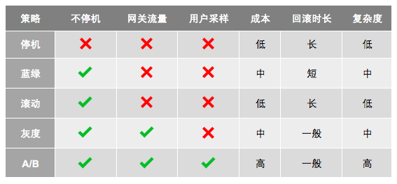

- 000 开篇词 洞悉技术的本质，享受科技的乐趣.md.html
- 001 程序员如何用技术变现（上）.md.html
- 002 程序员如何用技术变现（下）.md.html
- 003 Equifax信息泄露始末.md.html
- 004 从Equifax信息泄露看数据安全.md.html
- 005 何为技术领导力.md.html
- 006 如何拥有技术领导力.md.html
- 007 推荐阅读：每个程序员都该知道的事.md.html
- 008 Go语言，Docker和新技术.md.html
- 009 答疑解惑：渴望、热情和选择.md.html
- 010 如何成为一个大家愿意追随的Leader？.md.html
- 011 程序中的错误处理：错误返回码和异常捕捉.md.html
- 012 程序中的错误处理：异步编程和最佳实践.md.html
- 013 魔数 0x5f3759df.md.html
- 014 推荐阅读：机器学习101.md.html
- 015 时间管理：同扭曲时间的事儿抗争.md.html
- 016 时间管理：投资赚取时间.md.html
- 017 故障处理最佳实践：应对故障.md.html
- 018 故障处理最佳实践：故障改进.md.html
- 019 答疑解惑：我们应该能够识别的表象和本质.md.html
- 020 分布式系统架构的冰与火.md.html
- 021 从亚马逊的实践，谈分布式系统的难点.md.html
- 022 分布式系统的技术栈.md.html
- 023 分布式系统关键技术：全栈监控.md.html
- 024 分布式系统关键技术：服务调度.md.html
- 025 分布式系统关键技术：流量与数据调度.md.html
- 026 洞悉PaaS平台的本质.md.html
- 027 推荐阅读：分布式系统架构经典资料.md.html
- 028 编程范式游记（1）- 起源.md.html
- 029 编程范式游记（2）- 泛型编程.md.html
- 030 编程范式游记（3） - 类型系统和泛型的本质.md.html
- 031 Git协同工作流，你该怎样选.md.html
- 032 推荐阅读：分布式数据调度相关论文.md.html
- 033 编程范式游记（4）- 函数式编程.md.html
- 034 编程范式游记（5）- 修饰器模式.md.html
- 035 编程范式游记（6）- 面向对象编程.md.html
- 036 编程范式游记（7）- 基于原型的编程范式.md.html
- 037 编程范式游记（8）- Go 语言的委托模式.md.html
- 038 编程范式游记（9）- 编程的本质.md.html
- 039 编程范式游记（10）- 逻辑编程范式.md.html
- 040 编程范式游记（11）- 程序世界里的编程范式.md.html
- 041 弹力设计篇之“认识故障和弹力设计”.md.html
- 042 弹力设计篇之“隔离设计”.md.html
- 043 弹力设计篇之“异步通讯设计”.md.html
- 044 弹力设计篇之“幂等性设计”.md.html
- 045 弹力设计篇之“服务的状态”.md.html
- 046 弹力设计篇之“补偿事务”.md.html
- 047 弹力设计篇之“重试设计”.md.html
- 048 弹力设计篇之“熔断设计”.md.html
- 049 弹力设计篇之“限流设计”.md.html
- 050 弹力设计篇之“降级设计”.md.html
- 051 弹力设计篇之“弹力设计总结”.md.html
- 052 区块链技术 - 区块链的革命性及技术概要.md.html
- 053 区块链技术 - 区块链技术细节 - 哈希算法.md.html
- 054 区块链技术 - 区块链技术细节 - 加密和挖矿.md.html
- 055 区块链技术 - 去中心化的共识机制.md.html
- 056 区块链技术 - 智能合约.md.html
- 057 区块链技术 - 传统金融和虚拟货币.md.html
- 058 管理设计篇之分布式锁.md.html
- 059 管理设计篇之配置中心.md.html
- 060 管理设计篇之边车模式.md.html
- 061 管理设计篇之服务网格.md.html
- 062 管理设计篇之网关模式.md.html
- 063 管理设计篇之部署升级策略.md.html
- 064 性能设计篇之缓存.md.html
- 065 性能设计篇之异步处理.md.html
- 066 性能设计篇之数据库扩展.md.html
- 067 性能设计篇之秒杀.md.html
- 068 性能设计篇之边缘计算.md.html
- 069 程序员练级攻略（2018）：开篇词.md.html
- 070 程序员练级攻略（2018）：零基础启蒙.md.html
- 071 程序员练级攻略（2018）：正式入门.md.html
- 072 程序员练级攻略（2018）：程序员修养.md.html
- 073 程序员练级攻略（2018）：编程语言.md.html
- 074 程序员练级攻略：理论学科.md.html
- 075 程序员练级攻略（2018）：系统知识.md.html
- 076 程序员练级攻略（2018）：软件设计.md.html
- 077 程序员练级攻略（2018）：Linux系统、内存和网络.md.html
- 078 程序员练级攻略（2018）：异步IO模型和Lock-Free编程.md.html
- 079 程序员练级攻略（2018）：Java底层知识.md.html
- 080 程序员练级攻略（2018）：数据库.md.html
- 081 程序员练级攻略（2018）：分布式架构入门.md.html
- 082 程序员练级攻略（2018）：分布式架构经典图书和论文.md.html
- 083 程序员练级攻略（2018）：分布式架构工程设计.md.html
- 084 程序员练级攻略（2018）：微服务.md.html
- 085 程序员练级攻略（2018）：容器化和自动化运维.md.html
- 086 程序员练级攻略（2018）：机器学习和人工智能.md.html
- 087 程序员练级攻略（2018）：前端基础和底层原理.md.html
- 088 程序员练级攻略（2018）：前端性能优化和框架.md.html
- 089 程序员练级攻略（2018）：UIUX设计.md.html
- 090 程序员练级攻略（2018）：技术资源集散地.md.html
- 091 程序员面试攻略：面试前的准备.md.html
- 092 程序员面试攻略：面试中的技巧.md.html
- 093 程序员面试攻略：面试风格.md.html
- 094 程序员面试攻略：实力才是王中王.md.html
- 095 高效学习：端正学习态度.md.html
- 096 高效学习：源头、原理和知识地图.md.html
- 097 高效学习：深度，归纳和坚持实践.md.html
- 098 高效学习：如何学习和阅读代码.md.html
- 099 高效学习：面对枯燥和量大的知识.md.html
- 100 高效沟通：Talk和Code同等重要.md.html
- 101 高效沟通：沟通阻碍和应对方法.md.html
- 102 高效沟通：沟通方式及技巧.md.html
- 103 高效沟通：沟通技术.md.html
- 104 高效沟通：好老板要善于提问.md.html
- 105 高效沟通：好好说话的艺术.md.html
- 106 加餐 谈谈我的“三观”.md.html
- 107 结束语 业精于勤，行成于思.md.html
063 管理设计篇之部署升级策略
在分布式系统的世界里，一个服务有多个实例，所以部署或是升级一个服务也会变得比较麻烦一些。这里，我们讨论一些服务部署的模式。一般来说，我们有下面的一些服务部署模式。
- 停机部署（Big Bang / Recreate）： 把现有版本的服务停机，然后部署新的版本。
- 蓝绿部署（Blue/Green /Stage）：部署好新版本后，把流量从老服务那边切过来。
- 滚动部署（Rolling Update / Ramped）： 一点一点地升级现有的服务。
- 灰度部署（Canary）：把一部分用户切到新版上来，然后看一下有没有问题。如果没有问题就继续扩大升级，直到全部升级完成。
- AB 测试（A/B Testing）：同时上线两个版本，然后做相关的比较。
下面，我们来看一下每种方式的使用场景和优缺点。
停机部署
停机部署其实是最简单粗暴的方式，就是简单地把现有版本的服务停机，然后部署新的版本。在一些时候，我们必需使用这样的方式来部署或升级多个服务。比如，新版本中的服务使用到了和老版本完全不兼容的数据表的设计。这个时候，我们对生产有两个变更，一个是数据库，另一个是服务，而且新老版本互不兼容，所以只能使用停机部署的方式。
这种方式的优势是，在部署过程中不会出现新老版本同时在线的情况，所有状态完全一致。停机部署主要是为了新版本的一致性问题。
这种方式最不好的问题就是会停机，对用户的影响会很大。所以，一般来说，这种部署方式需要事前挂公告，选择一个用户访问少的时间段来做。
蓝绿部署
蓝绿部署与停机部署最大的不同是，其在生产线上部署相同数量的新的服务，然后当新的服务测试确认 OK 后，把流量切到新的服务这边来。蓝绿部署比停机部署好的地方是，它无需停机。
我们可以看到这种部署方式，就是我们说的预发环境。在我以前的金融公司里，也经常用这种方式，生产线上有两套相同的集群，一套是 Prod 是真实服务的，另一套是 Stage 是预发环境，发布发 Stage，然后把流量切到 Stage 这边，于是 Stage 就成了 Prod，而之前的 Prod 则成了 Stage。有点像换页似的。
这种方式的优点是没有停机，实时发布和升级，也避免有新旧版本同时在线的问题。但这种部署的问题就是有点浪费，因为需要使用双倍的资源（不过，这只是在物理机时代，在云计算时代没事，因为虚拟机部署完就可以释放了）。
另外，如果我们的服务中有状态，比如一些缓存什么的，停机部署和蓝绿部署都会有问题。
滚动部署
滚动部署策略是指通过逐个替换应用的所有实例，来缓慢发布应用的一个新版本。通常过程如下：在负载调度后有个版本 A 的应用实例池，一个版本 B 的实例部署成功，可以响应请求时，该实例被加入到池中。然后，版本 A 的一个实例从池中删除并下线。
这种部署方式直接对现有的服务进行升级，虽然便于操作，而且在缓慢地更新的过程中，对于有状态的服务也是比较友好的，状态可以在更新中慢慢重建起来。但是，这种部署的问题也是比较多的。
- 在发布过程中，会出现新老两个版本同时在线的情况，同一用户的请求可能在新老版中切换而导致问题。
- 我们的新版程序没有在生产线上经过验证就上线了。
- 在整个过程中，生产环境处于一个新老更替的中间状态，如果有问题要回滚就有点麻烦了。
- 如果在升级过程中，需要做别的一些运维工作，我们还要判断哪些结点是老版本的，哪些结点是新版本的。这太痛苦了。
- 因为新老版本的代码同时在线，所以其依赖的服务需要同时处理两个版本的请求，这可能会带来兼容性问题。
- 而且，我们无法让流量在新老版本中切换。
灰度部署（金丝雀）
灰度部署又叫金丝雀部署。其得名来源于矿井中的金丝雀–17 世纪，英国矿井工人发现，金丝雀对瓦斯这种气体十分敏感。空气中哪怕有极其微量的瓦斯，金丝雀也会停止歌唱。而当瓦斯含量超过一定限度时，虽然鲁钝的人类毫无察觉，金丝雀却早已毒发身亡。当时在采矿设备相对简陋的条件下，工人们每次下井都会带上一只金丝雀作为 " 瓦斯检测指标 "，以便在危险状况下紧急撤离。
灰度部署是指逐渐将生产环境流量从老版本切换到新版本。通常流量是按比例分配的。例如 90% 的请求流向老版本，10% 的流向新版本。然后没有发现问题，就逐步扩大新版本上的流量，减少老版本上的流量。
除了切流量外，对于多租户的平台，例如云计算平台，灰度部署也可以将一些新的版本先部署到一些用户上，如果没有问题，扩大部署，直到全部用户。一般的策略是，从内部用户开始，然后是一般用户，最后是大客户。
这个技术大多数用于缺少足够测试，或者缺少可靠测试，或者对新版本的稳定性缺乏信心的情况下。
把一部分用户切到新版上来，然后看一下有没有问题。如果没有问题就继续扩大升级，直到全部升级完成。
AB 测试
AB 测试和蓝绿部署或是金丝雀灰度部署完全是不一样的。
AB 测试是同时上线两个版本，然后做相关的比较。是用来测试应用功能表现的方法，例如可用性、受欢迎程度、可见性等。
蓝绿部署是为了不停机，灰度部署是对新版本的质量没信心。而 AB 测试是对新版的功能没信心。注意，一个是质量，一个是功能。
比如，网站 UI 大改版，推荐算法的更新，流程的改变，我们不知道新的版本否会得到用户青睐或是能得到更好的用户体验，我们需要收集一定的用户数据才能知道。
于是我们需要在生产线上发布两个版本，拉一部分用户过来当小白鼠，然后通过科学的观测得出来相关的结论。AB 测试旨在通过科学的实验设计、采样样本代表性、流量分割与小流量测试等方式来获得具有代表性的实验结论，并确信该结论在推广到全部流量时可信。
我们可以看到 AB 测试，其包含了灰度发布的功能。也就是说，我们的观测如果只是观测有没有 bug，那就是灰度发布了。当然，如果我们复杂一点，要观测用户的一些数据指标，这完全也可能做成自动化的，如果新版本数据好，就自动化地切一点流量过来，如果不行，就换一批用户（样本）再试试。
对于灰度发布或是 AB 测试可以使用下面的技术来选择用户。
- 浏览器 cookie。
- 查询参数。
- 地理位置。
- 技术支持，如浏览器版本、屏幕尺寸、操作系统等。
- 客户端语言。
小结
部署应用有很多种方法，实际采用哪种方式取决于需求和预算。当发布到开发或者模拟环境时，停机或者滚动部署是一个好选择，因为干净和快速。当发布到生产环境时，滚动部署或者蓝绿部署通常是一个好选择，但新平台的主流程测试是必须的。
蓝绿部署也不错，但需要额外的资源。如果应用缺乏测试或者对软件的功能和稳定性影响缺乏信心，那么可以使用金丝雀部署或者 AB 测试发布。如果业务需要根据地理位置、语言、操作系统或者浏览器特征等参数来给一些特定的用户测试，那么可以采用 AB 测试技术。

好了，我们来总结一下今天分享的主要内容。首先，常见的部署升级策略有停机、蓝绿、滚动、灰度和 AB 测试这几种。然后，我讲述了每一种部署策略的含义和优缺点。最后，我将它们放在一起做了一个比较。下篇文章是《分布式系统设计模式》第三部分——性能设计的第一篇 " 缓存 "。希望对你有帮助。
也欢迎你分享一下你接触到的部署方式有哪些？在什么场景下使用哪一种部署方式？